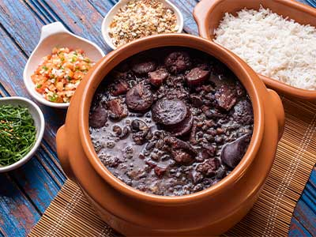

Home
Feijoada

Background
Feijoada is a traditional Brazilian dish that is made with black beans, pork, and spices. The name "feijoada" translates to "bean stew" in Portuguese, which is a reference to the main ingredient of the dish. This meal is typically served with rice, collard greens, and farofa, and is a popular meal in many Brazilian households.
Ingredients
- 1 lb black beans
- 1 lb pork shoulder, cut into 1-inch cubes
- 1 lb smoked sausage, sliced
- 1 lb bacon, chopped
- 1 large onion, chopped
- 4 cloves garlic, minced
- 2 bay leaves
- 1/4 cup olive oil
- 1/4 cup white vinegar
- 1/4 cup orange juice
- 1/4 cup cilantro, chopped
- 1/4 cup green onions, chopped
- 1/4 cup parsley, chopped
- 1/4 cup farofa
- 1/4 cup collard greens, chopped
Instructions
- Soak the black beans in water overnight.
- Drain the beans and place them in a large pot with enough water to cover.
- Bring the beans to a boil, then reduce the heat to low and simmer, covered, for 1-2 hours, or until the beans are tender.
- Heat the olive oil in a large pot over medium-high heat.
- Add the pork, sausage, and bacon to the pot and cook until browned, about 5-7 minutes.
- Add the onion, garlic, and bay leaves to the pot and cook until softened, about 5 minutes.
- Add the cooked beans to the pot and stir to combine.
- Add the vinegar, orange juice, cilantro, green onions, and parsley to the pot and stir to combine.
- Bring the mixture to a boil, then reduce the heat to low and simmer, covered, for 2-3 hours, or until the meat is tender.
- Remove the bay leaves before serving.
- Serve the feijoada with rice, collard greens, and farofa.